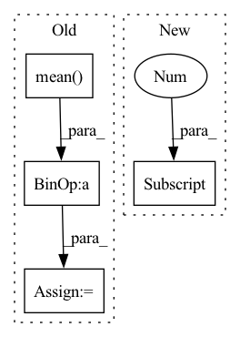

Pattern ID :17778

Before Change
m = H1.size(1)
H1bar = H1 - H1.mean(dim=1).unsqueeze(dim=1)
H2bar = H2 - H2.mean(dim=1).unsqueeze(dim=1)
SigmaHat12 = (1.0 / (m - 1)) * torch.matmul(H1bar, H2bar.t())
SigmaHat11 = (1 - self.r) * (1.0 / (m - 1)) * torch.matmul(H1bar,
H1bar.t()) + self.r * torch.eye(o1,
dtype=torch.double,
device=H1.device).float()
SigmaHat22 = (1 - self.r) * (1.0 / (m - 1)) * torch.matmul(H2bar,
H2bar.t()) + self.r * torch.eye(o2,
dtype=torch.double,
device=H2.device).float()
// performs the inverse square root of the covariance matrices by the cholesky decomposition. This is more stable than using SVD
SigmaHat11RootInv = torch.linalg.inv(torch.linalg.cholesky(_minimal_regularisation(SigmaHat11, self.eps)))
SigmaHat22RootInv = torch.linalg.inv(torch.linalg.cholesky(_minimal_regularisation(SigmaHat22, self.eps)))
Tval = torch.matmul(torch.matmul(SigmaHat11RootInv,
SigmaHat12), SigmaHat22RootInv)
trace_TT = torch.matmul(Tval.t(), Tval)
eigvals = torch.real(torch.linalg.eigvals(trace_TT))
eigvals = eigvals[torch.gt(eigvals, self.eps)]
corr = torch.sum(torch.sqrt(eigvals))
After Change
o1 = H1.shape[1]
o2 = H2.shape[1]
n = H1.shape[0]
H1bar, H2bar = _demean(H1, H2)
SigmaHat12 = (1.0 / (n - 1)) * torch.matmul(H1bar.T, H2bar)
In pattern: SUPERPATTERN
Frequency: 6
Non-data size: 4
Instances
Fragment ID: 58534012
Project Name: jameschapman19/cca_zoo
Commit Name: 109657aa0c08d40d8571bc16e653094cb6206408
Time: 2021-07-14
Author: james.chapman.19@ucl.ac.uk
File Name: cca_zoo/deepmodels/objectives.py
M Class Name: CCA
N Class Name: CCA
M Method Name: loss(3)
N Method Name: loss(3)
M Parent Class:
N Parent Class:
M File Name: cca_zoo/deepmodels/objectives.py
N File Name: cca_zoo/deepmodels/objectives.py
M Start Line: 143
M End Line: 171
N Start Line: 145
N End Line: 166
'>
Before Change
stats = {}
if stage != "train":
predictions = predictions.squeeze(2)
loss = -predictions.max(dim=-1)[0].sum(dim=-1).mean()
seq = ctc_greedy_decode(predictions, lens, blank_id=params.blank_id)
phns = undo_padding(phns, phn_lens)
stats["PER"] = wer_details_for_batch(ids, phns, seq)
After Change
ids, phns, phn_lens = targets
if stage != "train":
pout = predictions.squeeze(2)
predictions = predictions.expand(-1, -1, phns.shape[1] + 1, -1)
loss = params.compute_cost(
predictions,
'>
Fragment ID: 58533932
Project Name: speechbrain/speechbrain
Commit Name: 7b2a912879ed4372f56df73657c4fe7e8f6eacb5
Time: 2020-06-05
Author: a.heba@irit.fr
File Name: recipes/minimal_examples/neural_networks/ASR_Transducer/example_asr_transducer_experiment.py
M Class Name: TransducerBrain
N Class Name: TransducerBrain
M Method Name: compute_objectives(4)
N Method Name: compute_objectives(4)
M Parent Class: sb.core.Brain
N Parent Class: sb.core.Brain
M File Name: recipes/minimal_examples/neural_networks/ASR_Transducer/example_asr_transducer_experiment.py
N File Name: recipes/minimal_examples/neural_networks/ASR_Transducer/example_asr_transducer_experiment.py
M Start Line: 72
M End Line: 84
N Start Line: 72
N End Line: 85
'>
Before Change
// train AE(G)
Y_fake,dis_fake = self.model(X)
g_loss = F.binary_cross_entropy(dis_fake,real_labels)
ae_loss = torch.mean(torch.abs(Y_fake-Y))
// discriminator score
loss_G = ae_loss+g_loss
loss_G.backward()
self.Generator_opt.step()
After Change
for batch_idx, (X, Y) in enumerate(tqdm(self.data_loader)):
X, Y = X.to(self.device).float(), Y.to(self.device).float()
real_labels = torch.ones(X.shape[0]).to(self.device)
fake_labels = torch.zeros(X.shape[0]).to(self.device)
self.optimizer.zero_grad()
'>
Fragment ID: 58534028
Project Name: zxpzhong/3d-recgan-pytorch
Commit Name: bc3f11c55c0293aae56b04d103494f8f014ba073
Time: 2020-06-26
Author: zxpzhong@qq.com
File Name: trainer/trainer.py
M Class Name: Trainer
N Class Name: Trainer
M Method Name: _train_epoch(2)
N Method Name: _train_epoch(2)
M Parent Class: BaseTrainer
N Parent Class: BaseTrainer
M File Name: trainer/trainer.py
N File Name: trainer/trainer.py
M Start Line: 48
M End Line: 82
N Start Line: 51
N End Line: 73
'>
Before Change
stats = {}
if stage != "train":
predictions = predictions.squeeze(2)
loss = -predictions.max(dim=-1)[0].sum(dim=-1).mean()
ind2lab = params.train_loader.label_dict["phn"]["index2lab"]
sequence = ctc_greedy_decode(
predictions, lens, blank_id=params.blank_index
)
After Change
ids, phns, phn_lens = targets
if stage != "train":
pout = predictions.squeeze(2)
predictions = predictions.expand(-1, -1, phns.shape[1] + 1, -1)
loss = params.compute_cost(
predictions,
'>
Fragment ID: 58533993
Project Name: speechbrain/speechbrain
Commit Name: 7b2a912879ed4372f56df73657c4fe7e8f6eacb5
Time: 2020-06-05
Author: a.heba@irit.fr
File Name: recipes/TIMIT/ASR_Transducer/experiment.py
M Class Name: ASR
N Class Name: ASR
M Method Name: compute_objectives(4)
N Method Name: compute_objectives(4)
M Parent Class: sb.core.Brain
N Parent Class: sb.core.Brain
M File Name: recipes/TIMIT/ASR_Transducer/experiment.py
N File Name: recipes/TIMIT/ASR_Transducer/experiment.py
M Start Line: 84
M End Line: 98
N Start Line: 84
N End Line: 99
'>
Before Change
// sum_x = torch.sum(predictions[i]-torch.mean(predictions[i]))
// sum_y = torch.sum(targets[i]-torch.mean(targets[i]))
sum_xy = torch.sum((predictions[i]-torch.mean(predictions[i])) * (targets[i]-torch.mean(targets[i])))
pow_x = torch.sum(torch.pow(predictions[i]-torch.mean(predictions[i]), 2))
pow_y = torch.sum(torch.pow(targets[i]-torch.mean(targets[i]), 2))
pearson = (sum_xy / torch.sqrt(pow_x * pow_y) + eps).float()
rst += pearson
rst = rst / predictions.shape[0]
return rst
After Change
sum_xy = torch.sum(torch.mul(predictions[i], targets[i])) // xy
sum_x2 = torch.sum(torch.pow(predictions[i], 2)) // x^2
sum_y2 = torch.sum(torch.pow(targets[i], 2)) // y^2
N = predictions.shape[1]
pearson = (N * sum_xy - sum_x * sum_y) / (
torch.sqrt((N * sum_x2 - torch.pow(sum_x, 2)) * (N * sum_y2 - torch.pow(sum_y, 2)))) + eps
if torch.isnan(pearson):
print("pearson is nan")
'>
Fragment ID: 58533937
Project Name: tvs-ai/pytorch_rppgs
Commit Name: 79fa5ea2fc22ff76197fc5272382574b54608880
Time: 2023-01-02
Author: forownsake@gmail.com
File Name: vid2bp/nets/loss/loss.py
M Class Name: AnonimousClass
N Class Name: AnonimousClass
M Method Name: Neg_Pearson_Loss(2)
N Method Name: Neg_Pearson_Loss(2)
M Parent Class:
N Parent Class:
M File Name: vid2bp/nets/loss/loss.py
N File Name: vid2bp/nets/loss/loss.py
M Start Line: 114
M End Line: 173
N Start Line: 114
N End Line: 191
'>
Before Change
loss = -alpha * torch.mean(weights * torch.log(w))
else:
w = torch.exp(alpha * (log_p - log_q))
loss = -torch.log(torch.mean(w))
return loss
def sample(self, num_samples=1):
After Change
loss = -alpha * torch.mean(weights * torch.log(w))
else:
loss = -torch.logsumexp(alpha * (log_p - log_q), 0) + \
math.log(log_p.shape[0])
return loss
def sample(self, num_samples=1):
'>
Fragment ID: 58533955
Project Name: vincentstimper/normalizing-flows
Commit Name: bd1c0f685f92deaea52199d8ff3d942589ed9560
Time: 2020-06-01
Author: blank
File Name: normflow/core.py
M Class Name: NormalizingFlow
N Class Name: NormalizingFlow
M Method Name: reverse_alpha_div(4)
N Method Name: reverse_alpha_div(4)
M Parent Class: nn.Module
N Parent Class: nn.Module
M File Name: normflow/core.py
N File Name: normflow/core.py
M Start Line: 90
M End Line: 91
N Start Line: 74
N End Line: 92